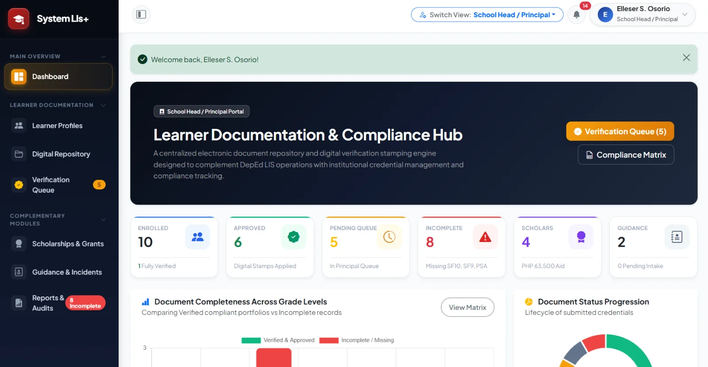
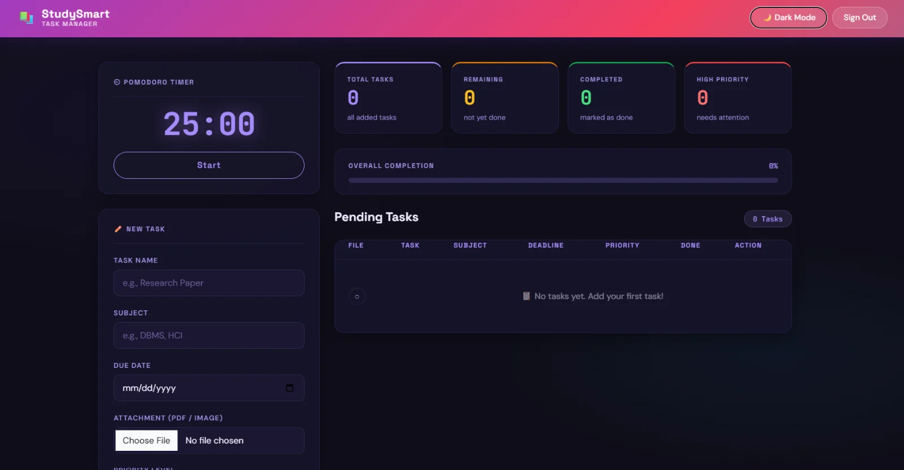
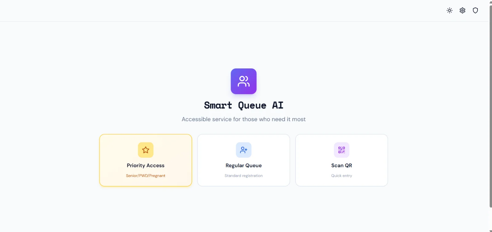
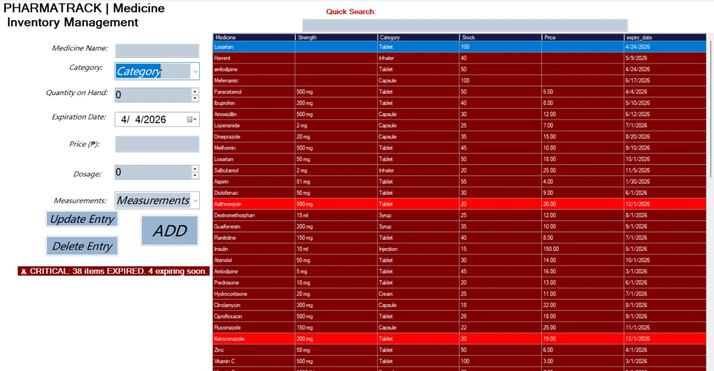

BSIT Student · ILOILO CITY, PH
Deleted code is debugged code. -Jeff Sickel.
I’m Jason, a Student trying to get in software development. student focused on crafting Random and building digital tools for everyday work.
My toolkit.
Projects with a purpose.
Web application · 01
Explore on GitHub ↗
LISplus
Student records for K–12 schools, in one place.

Productivity tool · 02
Explore on GitHub ↗
StudySmart
A focus timer and task list for study sessions.

Web application · 03
Explore on GitHub ↗
Queueing System
A service queue that stays clear for everyone waiting.

WordPress site · 04
Explore on GitHub ↗
Cooking Website
Filipino recipes, ingredients, and steps.
Desktop app · 05
Explore on GitHub ↗
Medicine Counter & Alert System
Prescription status with queue alerts.

About Me
I like turning ideas into approachable digital experiences, one considered decision at a time.
Good software is simple to use and built for a purpose. (Sometimes.)
Hi, I’m Jason, a BSIT student Living in Iloilo City, Philippines, studying at the University of San Agustin. I build practical tools for everyday problems—whether that’s managing student records, keeping a queue moving, or planning a study session.
Sometimes, I just like to explore new technologies and see what I can build. Exploring is what keeps me curious and motivated.
My approach is simple: keep the interface clear, make the details feel intentional, and build around what people actually need to get done. I’m always learning and looking for the next worthwhile problem to solve.
Have a project in mind or want to collaborate? I’d love to hear about it.
01 / Useful
Start with the need.
Make the purpose of a product clear and keep the important work in focus.
02 / Thoughtful
Care about the details.
Small choices in structure and interaction make a digital experience feel considered.
03 / Always learning
Stay curious.
Each project is a chance to explore a new idea and make the next version better.
Have something good in mind?
Tell me what you’re working on, what you want to make, or just say hello. I’m always open to a thoughtful conversation.